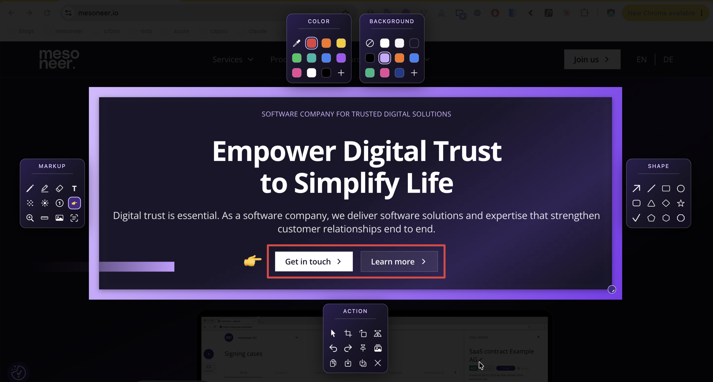

A lightweight menu-bar app for screenshots and screen recording. Press a hotkey, drag a region, annotate in place, then copy or save.

A complete annotation toolkit and share-ready output — all running entirely on your Mac, with no accounts, no cloud, and nothing leaving your device.
Drag any region with a live size readout, or tap Space for the whole screen — fired by a global hotkey and fully multi-monitor aware.
A hotkey hands off to the native macOS screen recorder (⇧⌘5), which reopens in your last-used mode.
The editor opens right over your capture. Pencil, marker, arrows, shapes, text, numbered steps, blur, spotlight and emoji stamps.
Corner-drag to resample at any size, or crop, rotate and flip — your annotations bake right in, so every export stays sharp.
Drop a pixel ruler over your shot — size it with the arrow keys, move to measure any distance, then click to imprint the reading.
Magnify any region into a crisp callout. Everything stays in full-resolution image space, so the inset — and your export — never goes soft.
Float any capture on top of every app and across Spaces. Drag to move, corner-drag to scale — perfect for reference while you work.
Pull selectable text or decode a QR code straight out of any screenshot with on-device OCR powered by Apple Vision.
Drop your shot onto a polished padded frame with shadow and rounded corners — ten presets or your own solid colour, baked at full resolution.
Turn an original and an edited shot into an animated before-and-after GIF in a click — written with ImageIO, no extra tools.
Global shortcuts for screenshot and record, fully rebindable in Settings. Choose your save folder, format, quality and auto-copy.
No accounts, no cloud, no telemetry — every capture stays on your Mac. Built in Swift with zero dependencies, quietly in the menu bar.
m_capture isn't notarized by Apple yet, so the first launch takes a couple of one-time steps.
Download the latest m_capture.dmg from Releases and open it.
Drag m_capture.app into your home Applications folder (~/Applications) — not the system /Applications, which can trigger app-blocking admin prompts. Create it if needed.
The app isn't notarized, so clear its quarantine flag before the first launch, then open it normally:
cd ~/Applications && xattr -dr com.apple.quarantine m_capture.app
No Terminal? Open the app once, then in System Settings → Privacy & Security click Open Anyway → Open (macOS 14 and earlier: Right-click → Open).
On first capture, macOS asks for Screen Recording permission. Approve m_capture under System Settings → Privacy & Security → Screen Recording and relaunch.
Hit ⌃⇧X for a screenshot or ⌃⇧R to record — a dim selection overlay slides in instantly, no app to launch.
Drag out any region with a live size readout, or tap Space for whole-screen mode. Fully multi-monitor aware.
The in-place editor opens right over your capture. Hit ⌘C to copy or ⌘S to save — your call.
Missing a tool, a shortcut, an export format? Send it our way — every suggestion is read.
Request a featureMaintenance update — fixes a handful of minor bugs and rough edges across capture and the editor.
See full changelogFirst public release — region & full-screen capture plus in-place annotation, OCR text & QR, Pin to screen, share-ready backgrounds, and before/after GIF export.
See full changelogYes — m_capture is open source and MIT-licensed, free for anyone to use.
macOS 13 (Ventura) and later. It runs quietly in the menu bar with no Dock icon.
It isn't notarized by Apple yet. Clear the quarantine flag or use Open Anyway — see Get started above.
To your chosen folder (the Desktop by default) and the clipboard. Set the format and location in Settings.
No. Everything stays on your Mac — no accounts, no cloud, no telemetry.
Yes — rebind the screenshot and record hotkeys under Settings → Shortcuts.